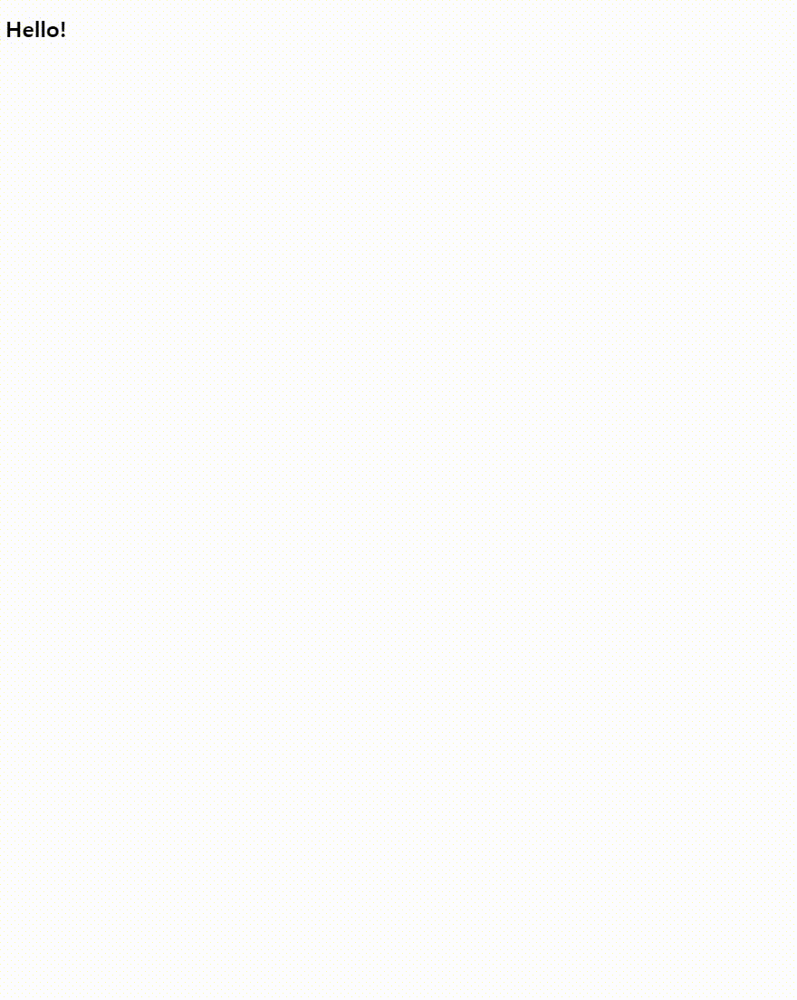
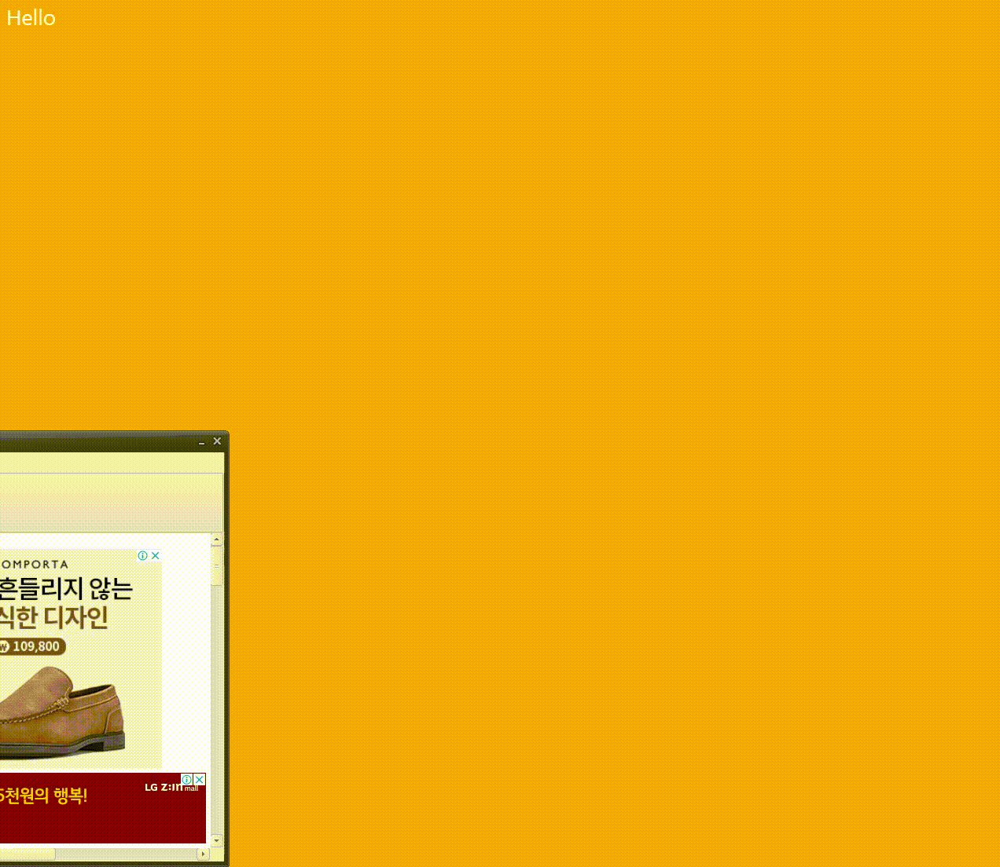
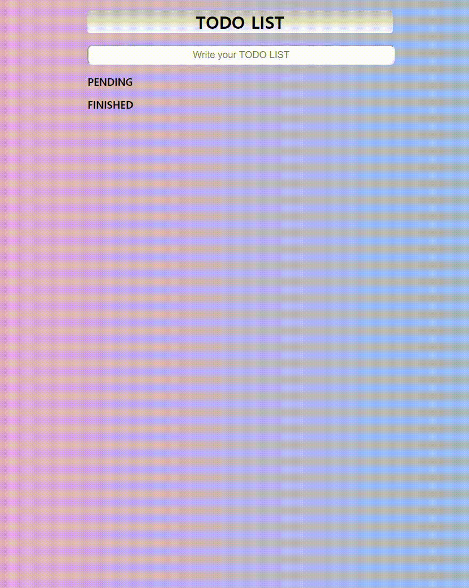
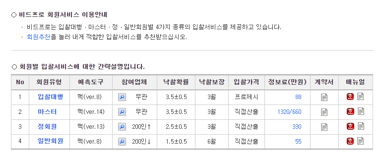

1. 퀴즈는 총 팝업퀴즈(16문제) 1개, 실습문제 4개로 이루어져있습니다 (총 5문제)
2. 이 중, 1-4번문제는 html, css, js에 관련된 문제이고, 5번은 html, css만 활용하는 문제입니다
3. 퀴즈 푸는 기간은 1주일입니다. ( 2/29일 18:00 시작 3월7일 18:00 까지 )
# 실습문제푸는법
1. 깃허브에 가입합니다(아이디와 비번을 기억합니다)
2. 새창으로 띄워 code sandbox에 접속합니다
3. 오른쪽상단에 sign in with Github으로 로그인합니다.
4. ctrl+s를 눌러 저장합니다. 새로운 url로 자동 저장됩니다.(본인 깃헙과 연동되어 저장됩니다)
※ url이 달라지는지 확인해주세요. 저장이 되지 않을수있습니다
5. 코드를 적어주세요. ctrl+s를 누르면 실시간으로 반영됩니다
# QUIZ 1
팝업퀴즈16개는 80% 이상을 맞춰야 통과입니다. 따라서, 13문제 이상을 맞춰야 통과입니다.
# QUIZ 2
퀴즈풀러 가기 (마우스 오른쪽을 눌러 새창으로 띄운뒤 푸세요)

1. 첫 디폴트 화면에 hello가 뜨게 하세요
2. hello 문자열 위에 마우스를 올리면 폰트색깔이 하늘색으로 바뀌고 문자열을 'mouse is here!'로 바꿔주세요
3. 마우스가 벗어나면 폰트색깔이 보라색으로 바뀌고 문자열을 'mouse is gone!'으로 바꿔주세요
4. 화면을 resize하면 폰트색깔이 민트색으로 바뀌고 문자열을 'you just resized!' 로 바꿔주세요
# QUIZ 3
퀴즈풀러 가기(마우스 오른쪽을 눌러 새창으로 띄운뒤 푸세요)

1. window 너비가 700이하로 가면 배경화면을 보라색으로 바뀌게 해주세요
2. window 너비가 500이하로 가면 배경화면을 하늘색으로 바뀌게 해주세요
3. 이외에는 배경화면을 주황색으로 바뀌게 해주세요
# QUIZ 4
퀴즈풀러 가기(마우스 오른쪽을 눌러 새창으로 띄운뒤 푸세요)

1. TODO 리스트를 만들어봅니다
2. input box를 만들어 입력할 수 있는 창을 만들어줍니다
3. 입력을 하고 엔터를 누르면 로컬스토리지에 저장됨과 동시에 목록이 PENDING에 들어갑니다
4. PENDING 옆에 있는 X를 누르면 로컬스토리지에도 삭제되고, PENDING 목록에서도 사라집니다
5. PENDING 옆에 있는 O를 누르면 FINISHED로 들어갑니다
6. FINISHED 옆에 있는 X를 누르면 로컬스토리지에도 삭제되고, FINISHED 목록에서도 사라집니다
7. FINISHED 옆에 있는 △를 누르면 다시 PENDING 목록으로 되돌아갑니다
# QUIZ 5
퀴즈풀러 가기(마우스 오른쪽을 눌러 새창으로 띄운뒤 푸세요)

똑같이 따라 만들어 주세요